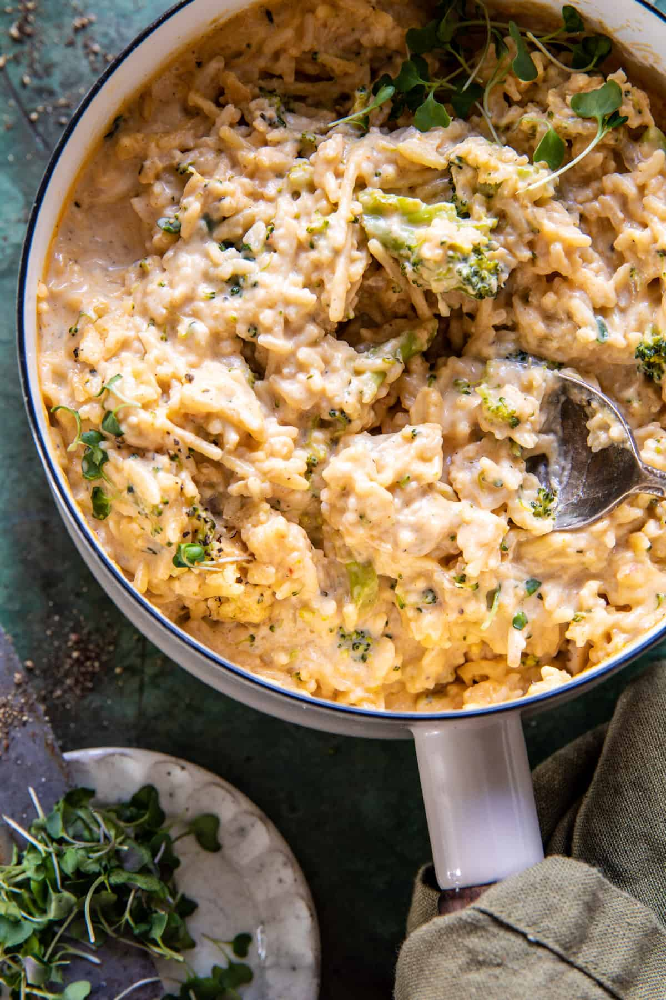

Creamy Broccoli Cheddar Recipe

Like broccoli cheddar soup meets risotto, but easier, and quicker to make.
Ingredients
- Olive Oil
- Salt & Pepper
- Chicken Breast
- Onion
- Butter
- Basmati Rice
- Chicken Broth
Steps
- In a large pot, set over medium heat, combine the olive oil, chicken, and onion. Cook until fragrant, about 5 minutes. Season with salt and pepper. Add the butter, thyme, garlic powder, paprika, and cayenne. Mix in the rice and pasta, cook until golden and toasted, 2-3 minutes.
- Add the broth and bring to a boil over high heat. Add the broccoli and a large pinch each of salt and pepper. Bring to a boil, cover, and reduce the heat to low. Cook, covered for 20-25 minutes, until the rice is mostly cooked.
- Once the rice is cooked, stir in the milk. Add the cheese, then remove from the heat. Stir until creamy. Serve warm with additional thyme and black pepper.